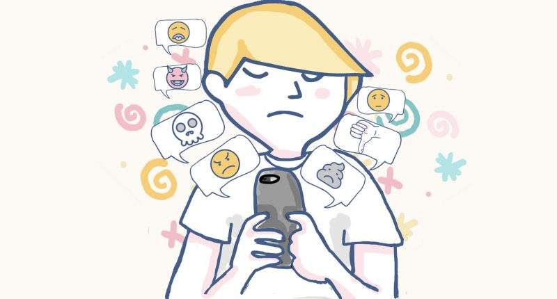

CIBERACOSO O CIBERBULLYING
El ciberacoso o ciberbullying entre iguales consiste en el uso intencionado de las tecnologías
de la información y la comunicación por parte de algunos menores, con la intención de
hostigar, acosar, intimidar, insultar, molestar, vejar, humillar o amenazar a un compañero o
compañera.Lo que caracteriza al ciberacoso es que se trata de una conducta deliberada(no
accidental),realizada a través de medios electrónicos o digitales por individuos o grupos de
individuos que, de forma reiterada, envían mensajes hostiles o agresivos a otros individuos,
o sobre otros individuos, con la intención de infligir daño a las víctimas.

Principales características del ciberacoso entre iguales
- Se trata de un acto deliberado de agresión, mediante el cual el acosador (o acosadores) busca provocar daño a la otra persona, como medio para mantener el control sobre la víctima o someterla.
- Que provoca daño en la víctima: la víctima sufre un hostigamiento o acoso que le afecta física y emocionalmente, causando el deterioro de su autoestima y dignidad personal, dañando su estatus social y provocándole victimización psicológica, estrés emocional y rechazo social.
- Conducta repetida y/o duradera en el tiempo: el comportamiento del agresor refleja un patrón de comportamiento (no es un incidente aislado, sino una conducta que se mantiene o repite a lo largo del tiempo).
- Basado en el uso de medios digitales: el acoso u hostigamiento sobre la víctima se realiza a través de chats, teléfonos móviles, mensajes de texto, correos electrónicos, redes sociales, servicios de mensajería y otros dispositivos digitales (webs, blogs, fotologs, etc.), lo que lo diferencia del acoso tradicional o cara a cara.
- Los actores implicados son menores de edad: tanto los instigadores o acosadores como las víctimas son menores de edad (lo que excluye del ciberacoso entre iguales a otras formas de acoso, como el grooming, que implican a alguna persona adulta).
Señalar que si bien en ocasionesla víctima desconoce la identidad del agresor,habitualmente
suele existir contacto o relación previa entre agresor y víctima en el mundo físico,pudiendo
estar el ciberacoso ligado o no a situaciones de acoso cara a cara.
Uso de herramientas tecnológicas para ejercer ciberacoso

EL PERFIL DE ESPECTADORES O TESTIGOS
No existe un papel definido para las personas que actúan como espectadores o testigos de
situaciones de ciberacoso. Pese a ello este rol tiene una gran relevancia en la aparición y el
mantenimiento de las conductas de acoso cara a cara como virtual. De hecho muchos de
estos comportamientos no se producirían si no contaran con su participación.
La actitud que adopten los adolescentes que observan una agresión cibernética es clave
para que esa conducta se mantenga o reitere en el tiempo o bien se extinga o desaparezca.
Cualquier manifestación suya que de forma directa (simplemente dando un “me gusta”
a un comentario vejatorio del agresor/a hacia la víctima en Facebook o “retwitteaando
“o compartiendo algún contenido de ese tipo) o indirecta (pasando por alto cualquier
expresión de acoso observada) suponga algún modo de apoyo o comprensión a la conducta
del agresor contribuirá a reforzar o perpetuar la misma. Por el contrario,si muestra algún
tipo de rechazo a la misma o manifiesta su apoyo a la víctima contribuirá a contener o
evitar la reiteración del acoso.

La experiencia de ser espectador de un incidente de conductas de ciberacoso es singular,
puesto que la respuesta o reacción ante las agresiones no es pública, a diferencia de los
incidentes de intimidación cara a cara. Ello propicia el predominio de las actitudes ambiguas
o indiferentes entre los espectadores digitales que participan en el acoso cibernético,incluso
más que el acoso tradicional. Por ello, en general, la indiferencia es la actitud preponderante
entre los espectadores adolescentes de las intimidaciones que se producen en la Red.
Algunos estudios señalan que los espectadores digitales son más propensos a participar
activamente en el acoso cibernético (por ejemplo, mediante el envío de fotos de una
compañera de clase) que en actos de intimidación que tienen lugar cara a cara.